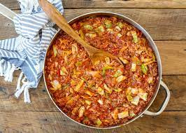

Unstuffed Cabbage Rolls

Ingredients
- 1 head of cabbage
- 1 pound ground sausage or ground beef
- 1 yellow onion
- 2 cans diced tomatoes
- 3 tablespoons pepper
- 1 tablespoon salt
- 2 cups vegetable broth
Steps
- Dice your onion and chop the cabbage into chunks
- In a medium skillet, brown your choice of ground meat and add in the diced onions
- Drain grease from the meat and add meat to a large pot
- Stir in the cabbage until thorougly combined with the meat
- Stir in both cans of diced tomatoes
- Add in vegetable broth
- Cook for 30 minutes or until cabbage is tender
- Add salt and pepper, serve into bowls and enjoy!